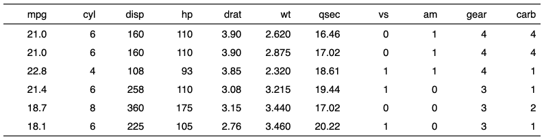
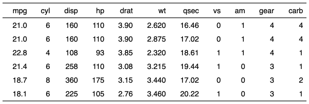

| autofit {flextable} | R Documentation |
compute and apply optimized widths and heights
(minimum estimated widths and heights for each table columns and rows
in inches returned by function dim_pretty()).
This function is to be used when the table widths and heights should automatically be adjusted to fit the size of the content.
autofit(x, add_w = 0.1, add_h = 0.1, part = c("body", "header"), unit = "in")
x |
flextable object |
add_w |
extra width to add in inches |
add_h |
extra height to add in inches |
part |
partname of the table (one of 'all', 'body', 'header' or 'footer') |
unit |
unit for add_h and add_w, one of "in", "cm", "mm". |
Soft returns (a line break in a paragraph) are not supported. Function
autofit will return wrong results if \n are used (they will be
considered as "").


This function is not related to 'Microsoft Word' Autofit feature.
Other flextable dimensions:
dim.flextable(),
dim_pretty(),
fit_to_width(),
flextable_dim(),
height(),
hrule(),
ncol_keys(),
nrow_part(),
set_table_properties(),
width()
ft_1 <- flextable(head(mtcars)) ft_1 ft_2 <- autofit(ft_1) ft_2